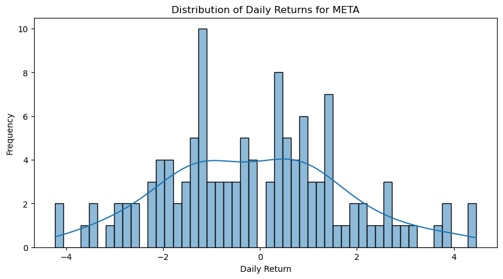

import pandas as pd
import matplotlib.pyplot as plt
AAPL = pd.read_csv('AAPL_Cleaned.csv')
MSFT = pd.read_csv('MSFT_Cleaned.csv')
GOOGL = pd.read_csv('GOOGL_Cleaned.csv')
AMZN = pd.read_csv('AMZN_Cleaned.csv')
META = pd.read_csv('META_Cleaned.csv')
TSLA = pd.read_csv('TSLA_Cleaned.csv')
AAPL = AAPL.drop('volume', axis=1)
MSFT = MSFT.drop('volume', axis=1)
GOOGL = GOOGL.drop('volume', axis=1)
AMZN = AMZN.drop('volume', axis=1)
META = META.drop('volume', axis=1)
TSLA = TSLA.drop('volume', axis=1)Data Exploration
In this section, we explore the dataset that we gathered for our analysis, try to visualize the dataset in different ways and provide the insight view of these datasets.
Discriptive Statistics
In this section, we provide the discriptive statistics for our datasets.
#Summary statistics for Data
summary_statistics_AAPL = AAPL.describe()
columns_to_include = [col for col in AAPL.columns if col != 'volume']
summary_statistics_AAPL = AAPL[columns_to_include].describe().drop('count')
summary_statistics_MSFT = MSFT.describe()
columns_to_include = [col for col in MSFT.columns if col != 'volume']
summary_statistics_MSFT = MSFT[columns_to_include].describe().drop('count')
summary_statistics_GOOGL = GOOGL.describe()
columns_to_include = [col for col in GOOGL.columns if col != 'volume']
summary_statistics_GOOGL = GOOGL[columns_to_include].describe().drop('count')
summary_statistics_AMZN = AMZN.describe()
columns_to_include = [col for col in AMZN.columns if col != 'volume']
summary_statistics_AMZN = AMZN[columns_to_include].describe().drop('count')
summary_statistics_META = META.describe()
columns_to_include = [col for col in META.columns if col != 'volume']
summary_statistics_META = META[columns_to_include].describe().drop('count')
summary_statistics_TSLA = TSLA.describe()
columns_to_include = [col for col in TSLA.columns if col != 'volume']
summary_statistics_TSLA = TSLA[columns_to_include].describe().drop('count')
print(summary_statistics_AAPL)
print(summary_statistics_MSFT)
print(summary_statistics_GOOGL)
print(summary_statistics_AMZN)
print(summary_statistics_META)
print(summary_statistics_TSLA) Unnamed: 0 open high low close daily_return
mean 61.000000 182.621618 184.165332 181.28169 182.798740 -0.034470
std 35.651087 7.726758 7.524253 7.81037 7.616109 1.224249
min 0.000000 166.910000 168.960000 165.67000 166.890000 -2.258081
25% 30.500000 176.480000 177.915000 174.96500 176.475000 -0.784270
50% 61.000000 182.130000 183.890000 180.97000 182.410000 -0.214791
75% 91.500000 189.840000 190.785000 188.77500 189.740000 0.651839
max 122.000000 196.235000 198.230000 195.28000 196.450000 5.044233
open high low close daily_return
mean 338.371797 341.523667 335.145264 338.381829 -0.084713
std 17.439894 17.460940 17.376831 17.758349 1.421001
min 310.990000 314.299000 309.450000 312.140000 -3.827645
25% 327.380000 330.090000 324.450000 327.615000 -1.063090
50% 333.720000 336.850000 330.390000 333.550000 -0.186183
75% 345.754000 348.125000 340.890000 345.175000 0.879040
max 383.760000 384.300000 378.160000 382.700000 3.910945
Unnamed: 0 open high low close daily_return
mean 61.000000 129.965325 131.350582 128.727017 130.076179 -0.032348
std 35.651087 6.231248 6.189705 6.219766 6.239215 1.751728
min 0.000000 116.290000 117.710000 115.350000 116.450000 -5.461437
25% 30.500000 124.890000 125.784000 123.230000 124.595000 -0.992612
50% 61.000000 130.710000 132.050000 129.450000 130.860000 -0.102974
75% 91.500000 135.080000 136.660000 133.980000 135.470000 0.957401
max 122.000000 141.050000 141.220000 138.580000 140.550000 10.508717
Unnamed: 0 open high low close daily_return
mean 61.000000 134.078081 135.608280 132.554260 134.157317 -0.103032
std 35.651087 6.588607 6.546159 6.683915 6.777447 1.945700
min 0.000000 120.630000 121.639300 118.350000 119.570000 -7.637745
25% 30.500000 128.880000 130.360000 127.360000 128.670000 -1.304303
50% 61.000000 133.200000 133.950000 131.619900 133.090000 -0.074515
75% 91.500000 139.265000 140.660000 137.620000 139.085000 0.878135
max 122.000000 147.850000 149.260000 146.880000 147.730000 5.906582
Unnamed: 0 open high low close daily_return
mean 61.000000 305.800228 309.896241 301.665083 305.852033 -0.114737
std 35.651087 16.293083 15.949483 16.412180 16.209030 1.844664
min 0.000000 267.170000 271.750000 265.330000 271.050000 -4.230675
25% 30.500000 295.670000 299.230000 291.255000 294.420000 -1.330240
50% 61.000000 304.260000 308.659900 300.030000 304.790000 -0.169339
75% 91.500000 317.295000 320.930000 312.095000 316.285000 1.075186
max 122.000000 340.130000 342.920000 338.580000 341.490000 4.459209
Unnamed: 0 open high low close daily_return
mean 61.000000 248.103603 252.930038 243.238027 248.207642 0.086610
std 35.651087 20.364020 20.324808 20.404366 20.519590 3.157984
min 0.000000 196.120000 202.800000 194.070000 197.360000 -9.167337
25% 30.500000 235.370000 239.781650 231.650000 235.840000 -1.610762
50% 61.000000 250.000000 255.399900 244.590000 251.120000 -0.005460
75% 91.500000 261.235000 267.550000 257.429550 261.465000 1.807493
max 122.000000 296.040000 299.290000 289.520100 293.340000 10.787372Visualizations
First, we show the price change directly in a line plot.
#Line plot for closing price for each company
AAPL['timestamp'] = pd.to_datetime(AAPL['timestamp'])
AAPL.set_index('timestamp', inplace=True)
MSFT['timestamp'] = pd.to_datetime(MSFT['timestamp'])
MSFT.set_index('timestamp', inplace=True)
GOOGL['timestamp'] = pd.to_datetime(GOOGL['timestamp'])
GOOGL.set_index('timestamp', inplace=True)
AMZN['timestamp'] = pd.to_datetime(AMZN['timestamp'])
AMZN.set_index('timestamp', inplace=True)
META['timestamp'] = pd.to_datetime(META['timestamp'])
META.set_index('timestamp', inplace=True)
TSLA['timestamp'] = pd.to_datetime(TSLA['timestamp'])
TSLA.set_index('timestamp', inplace=True)
closing_prices = pd.DataFrame({
'AAPL': AAPL['close'],
'MSFT': MSFT['close'],
'GOOGL': GOOGL['close'],
'AMZN': AMZN['close'],
'META': META['close'],
'TSLA': TSLA['close']
})
plt.figure(figsize=(15, 8))
for ticker in closing_prices.columns:
plt.plot(closing_prices.index, closing_prices[ticker], label=ticker)
plt.title('Closing Prices Over Time')
plt.xlabel('Date')
plt.ylabel('Price (USD)')
plt.legend()
plt.show()The line plot shows the overall stock price. Each company’s stock price trend is distinct. AAPL (Apple) shows a generally upward trend, suggesting a period of growth or positive performance. TSLA (Tesla), on the other hand, exhibits a more volatile trend with significant drops, especially towards the end of the period.
TSLA’s stock price shows notable volatility compared to the others, with sharp increases and decreases. This might be indicative of market reactions to news or events specifically related to Tesla.
There seems to be a period where most stocks show a downward trend (particularly noticeable with TSLA, AMZN, and GOOGL), which could point to a market-wide event or sentiment that negatively impacted these stocks.
A noticeable trend across multiple stocks is a general decrease at specific points in time (2023-07 to 2023-08). This could be indicative of market-wide events or sentiments that are negatively impacting the tech sector as a whole.
Then we want to show the distribution for daily return for each company.
# Distribution for daily return
import seaborn as sns
for column in AAPL.filter(regex='daily_return$').columns:
plt.figure(figsize=(10, 5))
sns.histplot(AAPL[column].dropna(), bins=50, kde=True)
plt.title(f'Distribution of Daily Returns for AAPL')
plt.xlabel('Daily Return')
plt.ylabel('Frequency')
plt.show()
for column in MSFT.filter(regex='daily_return$').columns:
plt.figure(figsize=(10, 5))
sns.histplot(MSFT[column].dropna(), bins=50, kde=True)
plt.title(f'Distribution of Daily Returns for MSFT')
plt.xlabel('Daily Return')
plt.ylabel('Frequency')
plt.show()
for column in GOOGL.filter(regex='daily_return$').columns:
plt.figure(figsize=(10, 5))
sns.histplot(GOOGL[column].dropna(), bins=50, kde=True)
plt.title(f'Distribution of Daily Returns for GOOGL')
plt.xlabel('Daily Return')
plt.ylabel('Frequency')
plt.show()
for column in AMZN.filter(regex='daily_return$').columns:
plt.figure(figsize=(10, 5))
sns.histplot(AMZN[column].dropna(), bins=50, kde=True)
plt.title(f'Distribution of Daily Returns for AMZN')
plt.xlabel('Daily Return')
plt.ylabel('Frequency')
plt.show()
for column in META.filter(regex='daily_return$').columns:
plt.figure(figsize=(10, 5))
sns.histplot(META[column].dropna(), bins=50, kde=True)
plt.title(f'Distribution of Daily Returns for META')
plt.xlabel('Daily Return')
plt.ylabel('Frequency')
plt.show()
for column in TSLA.filter(regex='daily_return$').columns:
plt.figure(figsize=(10, 5))
sns.histplot(TSLA[column].dropna(), bins=50, kde=True)
plt.title(f'Distribution of Daily Returns for TSLA')
plt.xlabel('Daily Return')
plt.ylabel('Frequency')
plt.show()
In all histograms, the distribution of daily returns does not perfectly align with the normal distribution curve, which is common in real-world financial data due to market inefficiencies, company-specific news, and macroeconomic events affecting stock prices. The varying shapes and spreads of these distributions can provide insights into the risk and volatility associated with each company’s stock. Investors often analyze these distributions to make decisions about portfolio risk management and investment strategies.
The center of the distribution indicates the major point of daily return, if it is right skewed, then the company has more days with positive daily return, such as Amazon, some are close to 0, means a balance between positive days and negative days. Some distribution have multiple peeks, indicating a high volatility, such as Tesla.
We also create a box plot for daily return.
daily_returns = closing_prices.pct_change().dropna()
sns.boxplot(data=daily_returns)
plt.title('Box Plot of Daily Returns for Different Stocks')
plt.ylabel('Daily Return')
plt.xticks(rotation=45)
plt.show()The medians (central lines within the boxes) are close to zero for most stocks, indicating that the middle value of returns is relatively low or around a neutral change in stock price. The interquartile ranges (IQRs, represented by the length of the boxes) vary, with TSLA (Tesla) showing the widest IQR, suggesting more variability or volatility in daily returns compared to the others.
The circles represent outliers, which are daily returns that lie beyond the expected range. Notably, TSLA has several outliers, which indicates days with exceptional gains or losses compared to typical daily movements.
The box plots for AAPL, MSFT, and GOOGL appear relatively symmetrical around their medians, suggesting an even distribution of daily returns above and below the median. AMZN and META show a slight shift towards the negative end, indicating that daily returns are more frequently on the lower side.
We are trying to figure out if the daily return for different companies have any correlations, so we create a heatmap for each companies.
correlation_matrix = daily_returns.corr()
sns.heatmap(correlation_matrix, annot=True, cmap='Blues', linewidths=.5)
plt.title('Correlation Matrix for Daily Returns of Stocks')
plt.show()A correlation matrix is a table showing correlation coefficients between variables. Each cell in the table shows the correlation between two variables. The value is in the range of -1 to 1.
In this plot, GOOGL and AMZN show a relatively high positive correlation of 0.59, suggesting that their stock returns tend to move in the same direction. Similarly, GOOGL and META have a correlation of 0.61, AMZN and META also have a correlation of 0.61.